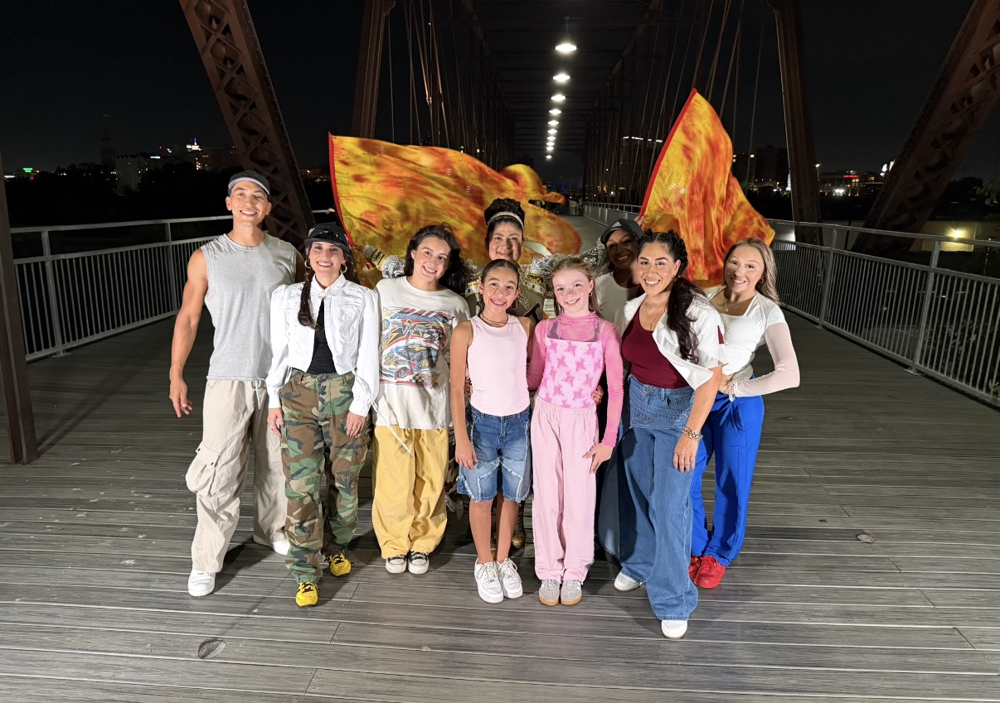
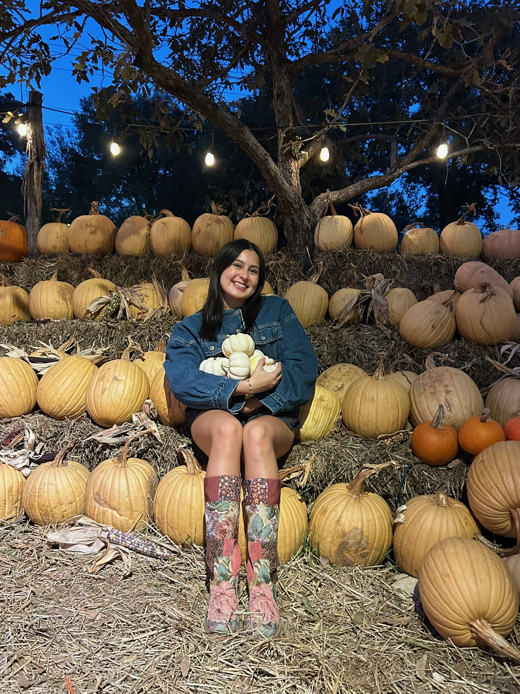

Choreography
Dancer • Choreographer • Creative
Bri-Anne
Palacios
Creating, performing, and telling stories through movement.
View my work ↓Dance. Create. Perform.
Being able to tell a story through movement and passion.
It’s how I express who I am, and connect with the community around me. I am a dancer based in San Antonio, TX and currently train in Jazz Funk, Heels, and Hip-Hop related styles. I provide experience as a performer, teacher, coach, and choreographer, and I continue to develop my skills by engaging in opportunities to perform, collaborate, and bring new ideas to life through movement.
Selected work
In motion.
Class training, workshops, performances, and video concepts.
Choreography/Performance
Dance Reel 02
Training
Dance Reel 03

Choreography • Creative Direction
GLORY ALL AROUND.
Telling a story about finding your path.
Here is a recent collaboration I did with a local videographer/director to help bring her vision to life. I was in charge of choreography, blocking, and was offered the opportunity to be a performer in the video shooting.
“Have an idea? I would love to talk more about how we can collaborate!”
Work with me →About Bri-Anne
After focusing on other goals of mine, I found my way back to dance - and life has never been better.
My dance career started in my childhood, when I was a part of my middle and high school drill teams. I was able to learn the importance of working as a team, along with understanding how to be a strong leader.
For 7 years, I chose to focus on other goals, such as receiving my Masters in Social Work, living in different states, and starting my own podcast, along with showing up for my responsibilities. Since resparking my dance career in August 2025, I’ve had the opportunity to teach at a dance studio, create choreography and coach others to feel comfortable in their body, train in several dance styles each week, attend workshops, and perform with different teams at Countdown Studio in San Antonio, TX.
My current style is influenced by my long history in jazz funk and pom performance styles, embracing all different energy levels, texture, and levels. I have a long rooted love for hip hop, and currently focus on expanding my skill set in that style.

Let’s create
Let me bring your
vision to life.
Have a song, performance, video, or idea in mind? Let’s turn it into movement.
Start a project →Get in touch
Let’s work together.
Looking for choreography, a performer, dance instruction, or a creative collaborator? I’d love to hear what you have in mind.